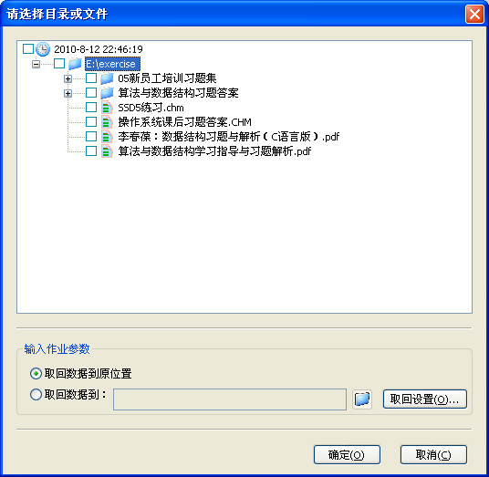
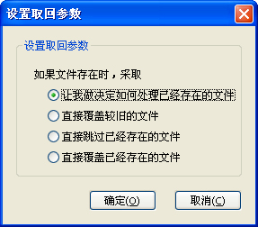
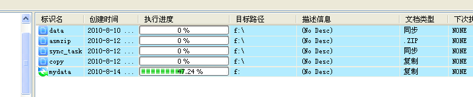

取回作业数据
1. 选择需要取回的数据：
选择“文件”菜单中的打开档案，或者在作业列表中右击某个作业，并选择“取回数据”，如果对应作业的 UIF 文件可以找到，则直接打开这个 UIF 文件对应的数据源树：

2. 选择取回的位置：
可以取回到原位置，或者自己指定一个位置。如果需要对已经存在的文件进行默认处理时，请点击“取回选择”进行设置;

3. 执行取回：
设置好取回设置后，点击“确定”即开始取回过程
